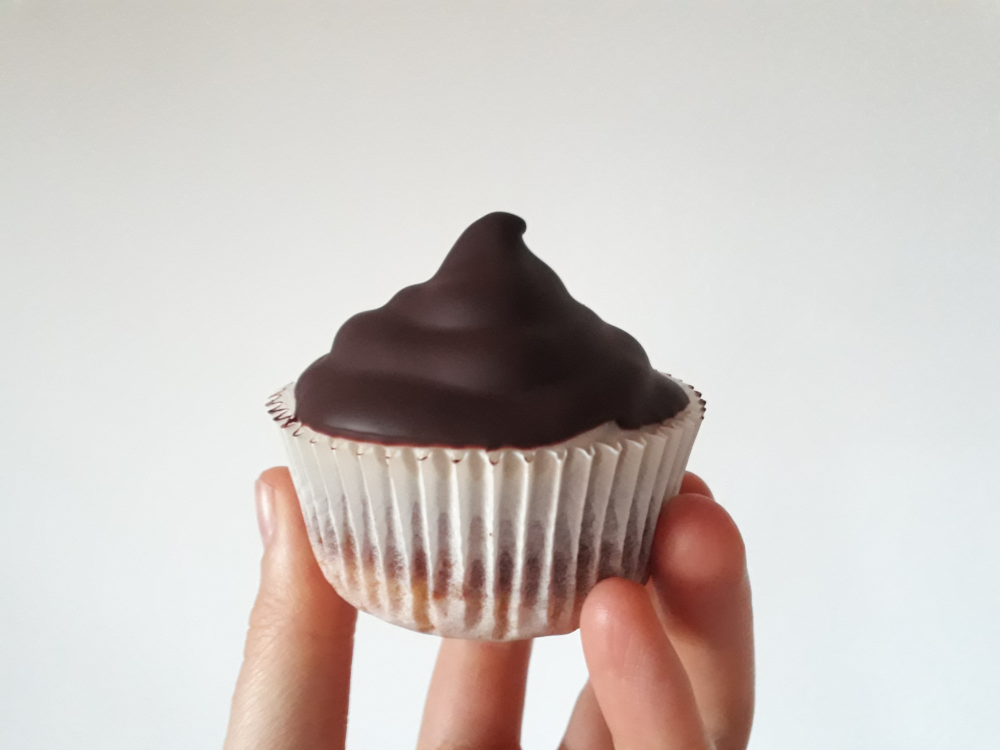

Abwandlung von diesem Rezept.
für 8 Cupcakes
Zutaten
Teig:
| 100 |
g |
Zucker (halb-halb heller und brauner Zucker) |
| 60 |
g |
(Pflanzen-)Joghurt |
| 75 |
ml |
(Pflanzen-)Milch |
| 1 |
Prise |
Vanille |
| 80 |
g |
Öl |
| 180 |
g |
Mehl |
| 1 |
TL |
Backpulver |
| 1/4 |
TL |
Salz |
| 50 |
g |
Kirschen |
| 10 |
g |
Kakao |
| 20 |
ml |
(Pflanzen-)Milch |
Vanillecreme:
| 50 |
g |
Cashewnüsse |
| 200 |
ml |
Mandelmilch |
| 20 |
g |
Zucker |
| 1 |
Prise |
Vanille |
| 10 |
g |
Stärke |
Anleitung
- Zucker, (Pflanzen-)Joghurt, (Pflanzen-)Milch, Öl und Vanille vermischen.
- Mehl und Backpulver mischen und mit den nassen Zutaten zu einem glatten Teig verrühren.
- Die Hälfte des Teiges auf 8 Muffinförmchen aufteilen und die Kirschen darauf verteilen.
- Kakao mit Milch mischen und mit dem restlichen Teig verrühren.
- Schoko-Teig auf dem hellen Teig verteilen.
- Muffins ca. 25min bei 180°C backen und auskühlen lassen.
- Cashews min 4h einweichen
- Einweichwasser der Cashews abgießen.
- Alle Zutaten für die Vanillecreme pürieren, zu einem Pudding aufkochen und auskühlen lassen.
- Vanillecreme auf den Muffins verteilen.
- Muffins min 1h kalt stellen.
- Schokolade schmelzen und die Muffins darin eintunken, sodass die Vanillecreme vollständig mit Schokolade bedeckt ist..
Anmerkungen
- Der braune Zucker kann durch 45g hellem Zucker und 5g Melasse ersetzt werden